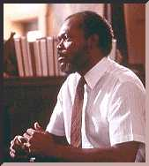

Contents | Features | Reviews | Books | Archives | Store |
 |
|
| Movie Credits | Buy It! |
A Time to Kill
Review by Carrie Gorringe
 |
Directed by Joel Schumacher. Starring Sandra Bullock, Samuel L.
Jackson, Matthew McConaughey, Kevin Spacey, Screenplay by Akiva Goldsman, from the |
There has been a considerable hue and cry over the "exaggerations" in the latest cinematic adaptation of a John Grisham work, A Time to Kill. Critics have been falling all over themselves in their zeal to prove that this story of an African-American father, driven to vigilante justice by the vicious exploits of a couple of not-so-good-old-boys, has gone beyond the pale. Many have suggested that this film is an anachronism, harking back to the violent reaction against the Civil Rights movement during the 1960s, citing the open marching of Klan figures down the street of the small town in which the movie is set (Canton, Mississippi) as evidence of the film's historical dishonesty. Such flagrant behavior, it is implied, would never happen in this day and age. One critic was moved to opine that there still might be pockets of racism in the American South, "but this [film] is ridiculous." One can't help but wonder if this attitude is less a matter of historical fact, than of wishful thinking. Perhaps someone should inform Morris Dees of the Southern Poverty Law Center of the superfluity of his work against hate crimes in the South and other areas of the United States, especially as the numbers of such crimes are on the rise.
Moreover, despite the strong attempts by many Southerners to overcome the past, there are still lingering resentments in certain quarters against Reconstruction -- over 120 years after its end. In response to an article reassessing the impact of the Reconstruction period (the military occupation of the South by the Northern Army from 1865 to 1877), the president of some organization called "The Southern League", which supposedly presumes to speak for all people of the South, irately proclaimed that the post-Civil War South "became an economic colony of Northeastern plutocrats" and accused said individuals, known among Southerners as carpetbaggers, of imposing the sharecropping system on the South (by which newly-freed blacks were reconstituted as de facto slaves after Reconstruction ended) through the enforced abolition of certain traditions of freerange usufruct. It would take an entire essay to even begin to answer the various errors and convenient historical omissions in this particular mindset; suffice it to say that the relative ease with which the South reverted to its traditional social, economic and racial patterns after 1877 -- albeit with some cosmetic changes -- makes it quite obvious that Reconstruction was a first-rate failure. Substantive on any terms would take place only ninety years later, with the Civil Rights movement grafting desegregation onto the social and economic traditions of the "Old South". The net result of this "New South" is an area in which, as Atlanta Herald-Constitution columnist Cynthia Tucker puts it, a white man driving a pick-up truck with a Confederate flag draped along the rear window will stop to help an elderly black woman cross the street. It is this uneasy coexistence of gentility and violence -- so noted by observers such as W.J. Cash -- that was a unique factor in Southern life, one which was not completely eradicated after 1965. It could still be a wellspring waiting to be tapped.
Himself a white Southerner, and hardly unconscious of these contradictions, Grisham reworked a scenario in A Time to Kill which, if hardly unique and extremely lurid, offered up great narrative promise: what would happen in the "New South" if an African-American father, Carl Lee Bailey (Jackson) incensed beyond reason at the brutal rape and near-murder of his ten-year-old daughter by a couple of good ol' boys going nowhere except where their battered pickup and beer-swilling habit will take them, decides to administer his own form of justice? To Grisham's credit, he is not reluctant to address the underlying racial tensions that exist in some quarters, and the film doesn't flinch from doing the same. Although director Schumacher has toned down the rape scene from its description in the novel, with all of the stomach-churning detail spread out over six pages, the scene has been edited to convey just enough material for an effect that is both shocking and a touch suggestive (an ironic situation in either case for Grisham to find himself in, since Grisham has been inveighing bitterly against the violence in Oliver Stone's Natural Born Killers). But A Time to Kill, in either form, goes no further than the simple and graphic depiction of racial violence, designed to inspire outrage. Grisham gives us brutality without attempting to address some of the underlying issues, such as a neo-feudalistic socio-economic structure that exploited both whites and blacks for the benefit of a white elite, with the theoretical "superiority" of all whites, regardless of income, as a sop to the sensibilities of poor whites; it was the skill and aim of some elites to play off the poorer whites against the blacks when necessary to quell social tension, to the detriment of the latter. More background information could have been presented to make this pernicious aspect of the past more comprehensible, and it wouldn't have taken much effort: some well-chosen dialogue could have done the trick. Instead, the book and film operate upon the assumption that the mere presentation of black poverty and white cruelty is all the audience needs to understand. So, the critic was right: the film is ridiculous, but it is the unbearable simplicity with which Grisham chooses to compress narrative events to the point where history is distilled into melodrama that makes it so, not in its admission that there are still extreme elements in the South.
Thus, the relationship of this film to an honest examination of lingering racial problems in the South is as corn liquor to Dom Perignon, as the stock characters and situations multiply with increasing ludicrousness. In another section of the film, invoking the tradition of extralegal presumptuousness permitted to offended whites, one of the good ol' boys' brothers (Kiefer Sutherland) sums up his nostalgia for the good ol' days in the film when addressing what should be done with Bailey: "The nigger would be hangin' from a tree with his balls in his mouth." The presiding judge at Bailey's trial is felicitously named Judge Noose (McGoohan) and is quite open in his belief that the offender will be given a fair trial -- before he is hanged. In addition to the judge with a penchant for necktie parties, we also have the oleaginous District Attorney, named Rufus Buckley (Spacey) with gubernatorial ambitions so strong he can taste them, who follows the dictum that lynching a black man is a popular pre-election activity, even if one has to go through the rather tiresome process of producing evidence beforehand. In the film, Buckley is so arch as a villain that he does everything but twirl the ends of his mustache and chuckle evilly at appropriately dramatic moments. Other stock figures the poor but noble defense attorney, Jake Bergance (McConaughey), his bitter and misunderstanding wife (Judd), Bergance's mentor, the sodden Southern aristocrat, Lucien Wilbanks (Donald Sutherland), a shady, skirt-chasing divorce-lawyer friend with the unlikely name of Harry Rex Vonner (Platt), and, for even better measure, the Northern liberal defense researcher, Ellen Roark (Bullock) with a mind like a tack. Better yet, Ms. Roark has a wealthy daddy, a fortunate plot development because the one thing this defense team is short of is money. As if all of this weren't bad enough, Elliot Goldenthal's musical score tops the list; in its stentorian and maudlin overplaying, it compares favorably with the worst qualities of the work of Max Steiner and Erich Wolfgang Korngold.
And yet, Grisham, director Schumacher and screenwriter Goldman are able to make something from this mess. If you don't think too much about the implications of what you're watching, the film becomes something that is reasonably compelling, and they just about succeed in pulling it out of the bag -- but not quite; director Schumacher, who directed a mediocre-but popular version of another Grisham novel, The Client, is on familiar territory, and he generally just lets things unroll with minimal interference from himself (a good tack to take, since he usually has a remarkable tendency to overplay elements whenever possible, and certainly whenever most undesirable). Only in the final courtroom scene do things begin to unravel a little too perilously; for all of his skill in crafting conventional narratives, Grisham oversteps his minor talents, and boxes himself in most spectacularly. Bailey has demonstrated premeditated intent, not only in his declared hatred of all whites (up to and including his defense attorney), but also in his confession that he intended to kill his daughter's torturers. Hence, there exist no grounds for self-defense or insanity, legally speaking. So Grisham is obliged to go for the heartstrings in order to find a way out, and Schumacher just keeps tugging right along with him. If you don't think about the shamelessly dishonest implications of this approach, the film actually works rather well. Unfortunately, I thought about them too often, and the film didn't help matters by providing nearly-constant reminders of its incompetence.
As in another mediocre Grisham offering, The Client, any suspense and empathy that the film can generate is in no small measure due to the prowess of its cast (if not in the characters themselves, who possess, in typical Grisham fashion, too much emotion and too little common sense -- a combination that's great for melodrama, but otherwise an irrelevance that leads to audience irreverence). As evidence, one could cite the tightly-wound performance of Samuel L. Jackson, who is able to convey all of the rage of fathers everywhere. Platt provides much-needed comic relief; his sly bantering with Bullock is one of the highlights of the film. McConaughey, the latest causality of overexposure in Hollywood, gives a performance commensurate with the material he's been given, but this is not the role that will make him a star in acting terms (for proof that the gentleman can really act, it might be wiser to wait for John Sayles' latest film, Lone Star, in which McConaughey displays a greater presence than here, even though his role is much smaller). McGoohan and Sutherland pere also provide some welcome southern-fried hamminess, although each tends to forget where he left his accent at inappropriate moments. If you're a Grisham fan, you will probably like this film. If not, go find some Perry Mason reruns.
Contents | Features | Reviews | Books | Archives | Store
Copyright © 1999 by Nitrate Productions, Inc. All Rights Reserved.